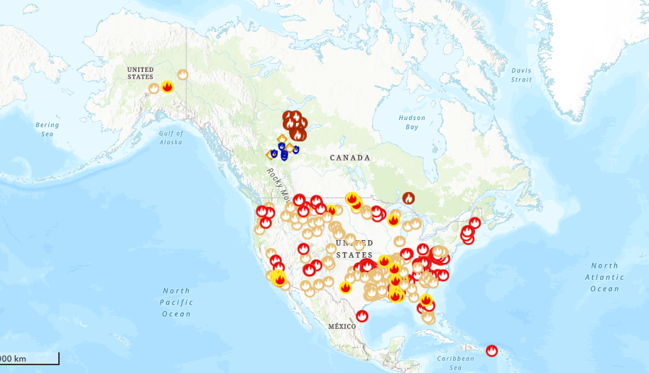
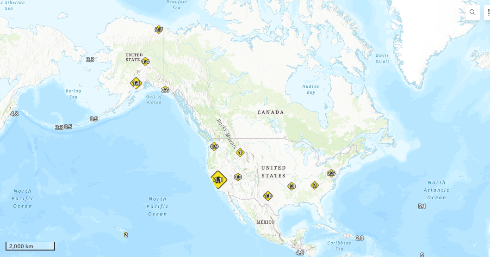

Over the past five weeks of our GEOM099 course, we explored various web technologies, with a keen eye on Geographic Information Systems (GIS) tools.
As a group, we are dedicated to enhancing disaster awareness and fostering rapid response by monitoring active natural disasters.
We focused on creating a comprehensive web interface to provide real-time data compilation on natural disasters over Canada and the US, specifically earthquakes, wildfires, and tornadoes.
We aimed to design a solution that not only aggregates and visualizes live disaster data effectively but also prioritizes ease of use for end users.
ArcGIS suite stood out for its intuitive interface and robust features. We included ArcGIS Online as for database management and web map creation, ArcGIS Dashboards to showcase data in a straightforward way, and ArcGIS StoryMaps for background information and more details.
By documenting contributions and maintaining transparent communication, we ensured a focus on user interface design throughout development.
As we near completion, we're excited to unveil our visually appealing and intuitive web platforms.
This project highlights our dedication to delivering impactful solutions that prioritize user experience and accessibility in GIS technology.
Whether you're an individual seeking to stay informed or an organization dedicated to disaster preparedness, there are numerous ways to get involved.
Explore our website to learn more about our work, initiatives, and team members.
Problem statement
Ideal
An available web platform to effectively present multiple live data feeds, focusing on real-time visualization of natural hazards, including wildfires, earthquakes, potential tornados (windspeed) in the United States and Canada.
Reality
The existing available materials lack user-friendliness and accessibility, hindering the public from obtaining and comprehending important information (live updates) regarding natural hazards.
Consequences
The public remains unaware of critical environmental concerns caused by natural hazards, and not getting time-efficient alarms, leading to long-term concerns.
Proposal
Present multiple live natural hazards data with various web platforms effectively.
Technologies
Esri Suites such as ArcGIS Online, ArcGIS Dashboard, ArcGIS Storymap.
Methodology
In our project, we adopted a multifaceted approach, integrating dashboards, story maps, and web maps to effectively address our problem statement. Furthermore, we utilized technical methods such as publishing CSV files as feature layers to augment the functionality and efficacy of our solutions.
Additionally, we actively retrieved live data from ArcGIS Online Living Atlas, ensuring the continuous relevance and reliability of our information. To enhance user experience, we implemented strategies to dynamically modify the data, including decluttering the map by toggling off unnecessary layers.
This meticulous approach aimed to provide users with clear and concise information, preventing the map from appearing overly cluttered or overwhelming. By amalgamating technical expertise with innovative strategies, our objective was to craft a seamless and intuitive platform for accessing real-time data on natural disasters in the USA and Canada.
Deliverables
We intended to deliver two primary outcomes for our project: ArcGIS Dashboards and ArcGIS StoryMaps. The dashboard featured all real-time data integrated into a single web map, offering a user-friendly interface for monitoring forest fires, earthquakes, and tornadoes across the USA and Canada.
We've enhanced the dashboard's interactivity and user-friendliness by incorporating various elements to improve data visualization
We collected real-time data from various authoritative sources. The earthquakes, forest fires, and tornadoes were from United States Geological Survey (USGS), the National Interagency Fire Center (NIFC), Natural Resource Canada (NRCan), Integrated Reporting of Wildland-Fire Information (IRWIN), and the National Oceanic and Atmospheric Administration (NOAA) respectively.
Through ArcGIS Online and ArcGIS Dashboards, we designed a user-friendly interface with interactive maps, charts, and widgets to visualize key metrics and trends in real-time. Our dashboard updated the latest information continuously, providing timely insights.
We had maps on our dashboard displaying real-time data together with various map-enhancing components. The pie chart showcased causes of forest fires in USA, and active fire stages in Canada. More forest fires information like counts and covered area size were included in tables.
The earthquake magnitude across both countries was shown in a bar graph. Storm information for the US was displayed in a line graph and a gauge. There was also a website with weather update on selected locations in Canada.
The interface design for browsing real-time data was straightforward and user-friendly.
ArcGIS StoryMaps, developed by Esri, is a versatile platform designed for users to craft engaging narratives using maps, text, multimedia content, and various other elements.
In our application of ArcGIS StoryMaps, we utilized it to showcase the current hazard conditions in both the USA and Canada. We demonstrated how we created an interactive dashboard to visualize live hazard data, illustrating the potential benefits derived from utilizing a dashboard.
The following image shows the map of the active wild fires of USA and Canada. Live data helps in early detection and monitoring of wildfires. It can help to identify areas with high risk and issue timely evacuation orders to ensure public safety.

The next image shows the map of the earthquakes of USA and Canada. Live earthquake data is crucial for early warning systems, helping emergency responders to access the magnitude and location of an earthquake rapidly.

The third image shows the map of the storms across the USA and Canada. The live data of windspeed is crucial for issuing early warnings, reducing the potential risk. It helps to access the risk to specific areas, allowing authorities to implement targeted emergency response plans.
Team
Priyanka Rathod
Having prior work experience as a Cartographer at NielsenIQ, Priyanka brings valuable skills and insights to her current pursuit of a GIS Cartographic Specialist program at Fleming Frost Campus. Her tenure at NielsenIQ would have equipped her with practical knowledge in cartography, spatial analysis, and data visualization, all of which are fundamental in the realm of Geographic Information Systems (GIS). Enrolling in the GIS Cartographic Specialist program at Fleming Frost Campus will undoubtedly deepen her expertise and groom her for a thriving career in this field.
Qianhui Hong
Qianhui holds a degree in biology and environmental science, complemented by a concurrent certificate in GIS from McMaster University.
Furthering her expertise, she enrolled in the Application Specialist program at Fleming College, honing more skills in GIS, including web development, cartography, programming, and database management.
Her passion lies in environmental monitoring, management, and conservation, which she seamlessly integrates with her newfound proficiency.
kabir
Driven by a curiosity to explore the interconnectedness of geographical data, I thrive in environments where I can apply GIS tools to tackle real-world challenges. Whether it's optimizing urban planning, enhancing environmental conservation efforts, or improving disaster response strategies, I am committed to utilizing GIS technology to create meaningful and actionable insights.
With a collaborative mindset, I excel in multidisciplinary teams, where I can contribute my expertise in GIS while learning from others in fields such as urban planning, environmental science, and public health. Committed to continuous learning, I stay abreast of the latest advancements in GIS technology and methodologies to stay at the forefront of this evolving field.
Simon Pariyar
Simon Pariyar is presently pursuing studies in the Geographic Information Systems: Cartographic Specialist program at Sir Sandford Fleming College – School of Environmental and Natural Resource Sciences. He holds a Bachelor's degree in Agricultural Engineering, where his introduction to GIS occurred during his final year project thesis, which focused on visualizing groundwater variability. Subsequently, in his professional endeavors at an Engineering firm called Ink Consult Pvt. Ltd, he gained extensive exposure to the field of Spatial Analysis and Mapping. Simon considers the knowledge and skills acquired through his current course as a significant milestone in his career progression.